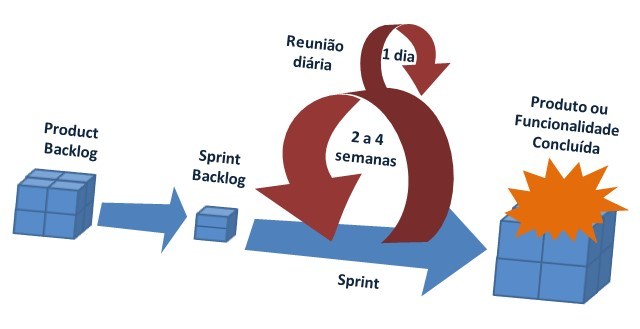
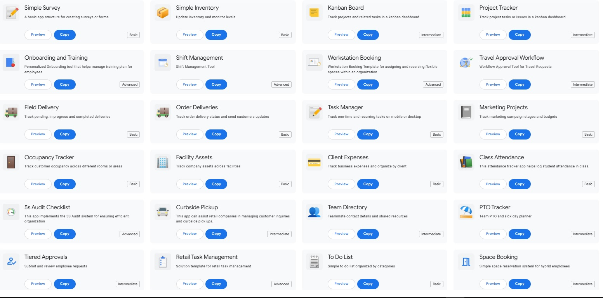
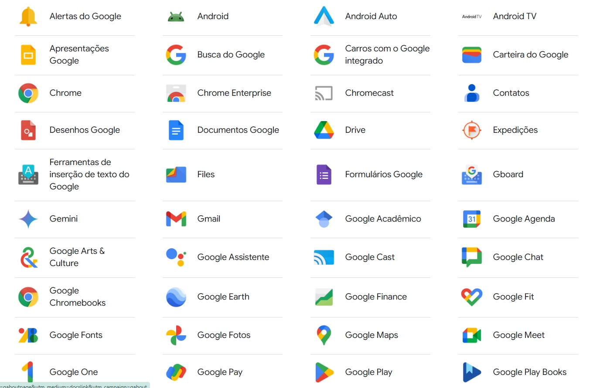

Metodologias Ágeis
Utilizamos metodologias ágeis como Scrum e Kanban para garantir entregas rápidas e contínuas, com foco na colaboração e na adaptação às mudanças.
Desenvolvimento Front-End

Criamos interfaces modernas e responsivas utilizando tecnologias como:
- HTML5: Estrutura semântica e acessível.
- CSS3: Estilização avançada com Flexbox e Grid.
- JavaScript: Interatividade e manipulação dinâmica.
Desenvolvimento Back-End

Nossas soluções de back-end são robustas e escaláveis, utilizando:
- Node.js: Execução de código JavaScript no servidor.
- Express.js: Framework para criação de APIs RESTful.
- Banco de Dados: MySQL, FireBase, e PostgreSQL.
Desenvolvimento na Plataforma AppSheet
Criamos soluções personalizadas utilizando a plataforma AppSheet, que permite o desenvolvimento rápido de aplicativos sem a necessidade de codificação avançada. As principais vantagens incluem:
- Automação de Processos: Automatize fluxos de trabalho e tarefas repetitivas.
- Integração com Dados: Conecte-se a fontes de dados como Google Sheets, Excel, SQL e outros.
- Aplicativos Multiplataforma: Crie aplicativos que funcionam em dispositivos móveis e desktops.
Integração com Sistemas Google
Desenvolvemos integrações avançadas com o ecossistema Google, permitindo que empresas aproveitem ao máximo as ferramentas disponíveis. Exemplos incluem:
- Google Sheets: Sincronização de dados em tempo real para relatórios e dashboards.
- Google Drive: Automação de armazenamento e organização de arquivos.
- Google Apps Script: Scripts personalizados para automatizar tarefas e conectar serviços.
Criação de Sistemas Desktop com Microsoft Access

Desenvolvemos sistemas Desktop robustos e eficientes utilizando o Microsoft Access, ideal para pequenas e médias empresas. As principais características incluem:
- Banco de Dados Local: Gerencie dados de forma segura e acessível.
- Interface Personalizada: Criação de formulários e relatórios adaptados às necessidades do cliente.
- Integração com Office: Conexão com Excel, Word e outras ferramentas do Microsoft Office.